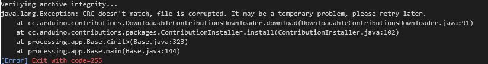
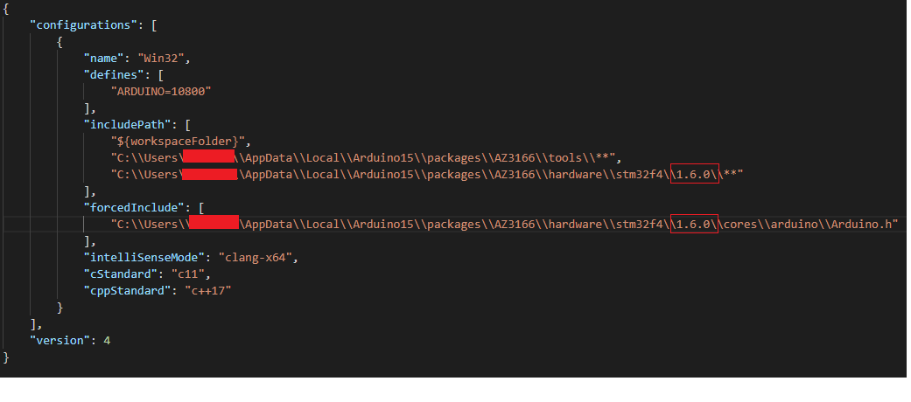
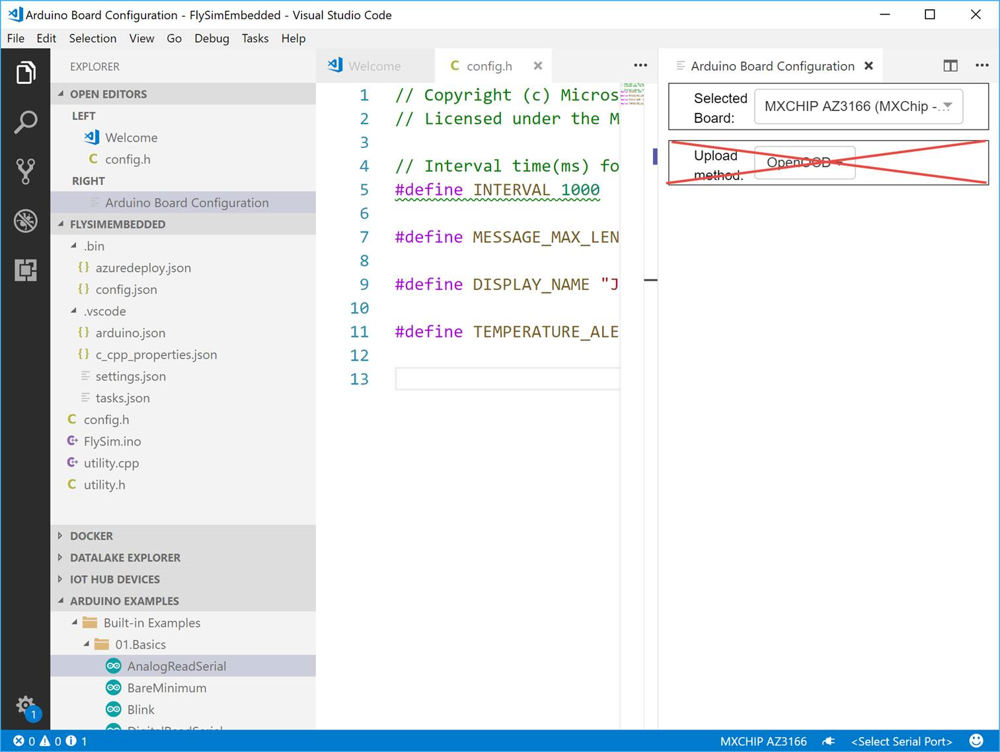

Frequently asked questions
FAQ
General
GDPR and IoT DevKit
Microsoft collects data to operate effectively and provide you the best experiences Participation is voluntary and when you choose to participate, your device automatically sends data to Microsoft about how you use the IoT DevKit.
If you choose to participate, you can stop at any time as described here.
If you are looking to disable the data collection for the old installation package, please follow the steps in this document .
Is the IoT DevKit Microsoft hardware
No. The hardware manufacturer is MXChip, an established player for IoT hardware. Through a partnership between MXChip and Microsoft, we rapidly iterated on the design and engineering of an Arduino compatible board with rich pre-installed sensors. Microsoft’s goal is to boost productivity for developers creating and prototyping IoT applications with awesome Visual Studio Code tooling that leverages the power of Microsoft Azure.
Why Arduino compatible
Based on industry data and customer research, we believe Arduino has a powerful and active community among professional makers. We would rather be part of this strong community than building a new community from scratch.
Are you going to open-source the product
Yes, we will open-source the firmware, toolchains, and all samples. Also, the board itself will be open-source hardware. That means we will release all original hardware design files.
Our plan is to do that as soon as we reach a stage where the entire framework is stable.
Where can I buy it
You can purchase the kit from our hardware partner’s product page: https://aka.ms/iot-devkit-purchase
Installation
Failed to install Arduino Package for IoT DevKit
Sometimes, whether in the Arduino IDE or VS Code, developers experience a failure to install the MXChip IoT DevKit package with the following error:

This may be a cache issue either on local Arduino cache and/or the remote CDN cache. Please clean the local cache first:
-
Uninstall the IoT DevKit package, whether in Arduino IDE or VS Code.
-
Manually remove the cache folder:
- For Windows, remove %localappdata%/Arduino15/staging/packages
- For macOS, remove ~/Library/Arduino15/staging
-
Then re-install the package.
If you are still experiencing this issue please contact us for support.
Wi-Fi Configuration
Cannot connect to a Wi-Fi hotspot
This may be because the Wi-Fi network needs additional certification (other than WPA/WPA2) or, if an open Wi-Fi, requires terms acceptance like on a captive portal such as Starbucks Wi-Fi.
To resolve, try to use Wi-Fi with normal WPA/WPA2 authentication.
Cannot connect to 5 GHz Wi-Fi
Currently, IoT DevKit only can connect to 2.4 GHz Wi-Fi, 5 GHz is not supported due to hardware restrictions.
Provision Azure Services
Cannot log in Azure because the access token expired
As a result of a previous Azure login, your access token may have expired.
To fix this, delete the web browser history including login data and run the command in Azure IoT Device Workbench: Provision Azure Services... again.
Page hangs when log in Azure
This issue can occur if you have multiple browsers sessions opened with different Azure subscriptions.
To resolve the issue, please clear the browser’s cache and cookies.
For more details please check I can’t sign in to manage my Azure subscription.
Development
Visual Studio Code cannot find Arduino IDE
Occasionally, when you launch Visual Studio Code, you are prompted with an error message that it cannot find the Arduino IDE or related board package.
To resolve this issue, please install the latest version of Arduino IDE here. Then Open File > Preference > Settings and add following lines to set the configurations for Arduino.
* Windows
```JSON
"arduino.path": "C:\\Program Files (x86)\\Arduino",
"arduino.additionalUrls": "https://raw.githubusercontent.com/VSChina/azureiotdevkit_tools/master/package_azureboard_index.json"
```
* macOS
```JSON
"arduino.path": "/Applications",
"arduino.additionalUrls": "https://raw.githubusercontent.com/VSChina/azureiotdevkit_tools/master/package_azureboard_index.json"
```
* Ubuntu
```JSON
"arduino.path": "/home/{username}/Downloads/arduino-1.8.8",
"arduino.additionalUrls": "https://raw.githubusercontent.com/VSChina/azureiotdevkit_tools/master/package_azureboard_index.json"
```
Additional warnings during compilation
In certain environments, lots of warnings message pops up in the VS Code OUTPUT windows when you invoke Arduino Verify, Arduino Upload or task device-upload to compile the project.
This is caused by the incorrect warning handling between Visual Studio Code Arduino extension and Arduino IDE. To solve this problem, the work around is to uninstall Arduino IDE from your local system and install the latest version of Arduino IDE.
Get “Error Presented: #include errors detected” when opening a project
The error message is Error Presented: #include errors detected. Please update your includePath.
This is an issue coming from the previous version of IoT DevKit SDK. To solve this problem,
- Open the c_cpp_properties.json file, update the version with the current installation SDK version in the include path:

Arduino upload return Error: STLinkMethod: Invalid option for “upload_method” option for board “MXCHIP_AZ3166”
In Visual Studio Code, when trying to invoke “Arduion:Board Config” to configure MXChip board ,the Upload Method selection wasn’t visible:

This is because Arduino configuration for current project is not set correctly.
To solve this problem, in .vsode\arduino.json, replace "configuration": "upload_method=STLinkMethod" to "configuration": "upload_method=OpenOCDMethod".
Unable to sync time with NTP time server
IoT DevKit would synchronize time with NTP time server before connecting to Azure IoT Hub. Sometimes, user would get the following error from serial port:
Unable to get the NTP host pool.ntp.org
Unable to get the NTP host cn.pool.ntp.org
Unable to get the NTP host europe.pool.ntp.org
Unable to get the NTP host asia.pool.ntp.org
Unable to get the NTP host oceania.pool.ntp.org
This may caused by NTP traffic blocking at the firewall in the Gateway. To solve this problem, make sure that UDP port 123 is open on all firewalls between IoT DevKit and the remote time servers.
| Time Server | port |
|---|---|
| pool.ntp.org | 123 |
| cn.pool.ntp.org | 123 |
| europe.pool.ntp.org | 123 |
| asia.pool.ntp.org | 123 |
| oceania.pool.ntp.org | 123 |
How to generate a sample binary file and upload it to the MXCHIP
Frist you should install the latest version of Arduino IDE here and open sample.ino like this in Arduino IDE.
Go to Tools > Board and select the right board (for example, MXCHIP AZ3166).
To generate a sample.bin file from your sketch, go to Sketch > Export compiled Binary.
A new Arduino binary file in the folder should be created.
Download boot.bin and az3166_patch_binary.py in the same folder.
Use the following command to generate the binary we need
az3166_patch_binary.py your_arduino_binary_file_name.bin mxchip_getstarted.bin
Connect the MXChip IoT DevKit with your machine via USB. You can find a removable USB Mass Storage disk named AZ3166. Copy the mxchip_getstarted.bin into this disk. The MXChip IoT DevKit will reboot after finished the copy and run the new application.
Reach us at
 Gitter
, get support at
Gitter
, get support at
 Stack Overflow
or share us on
Stack Overflow
or share us on